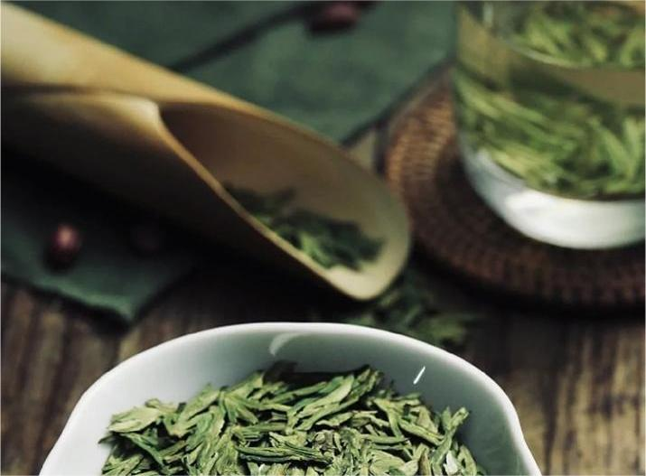
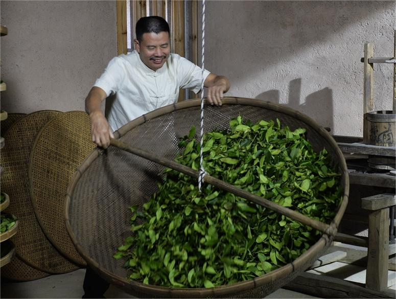
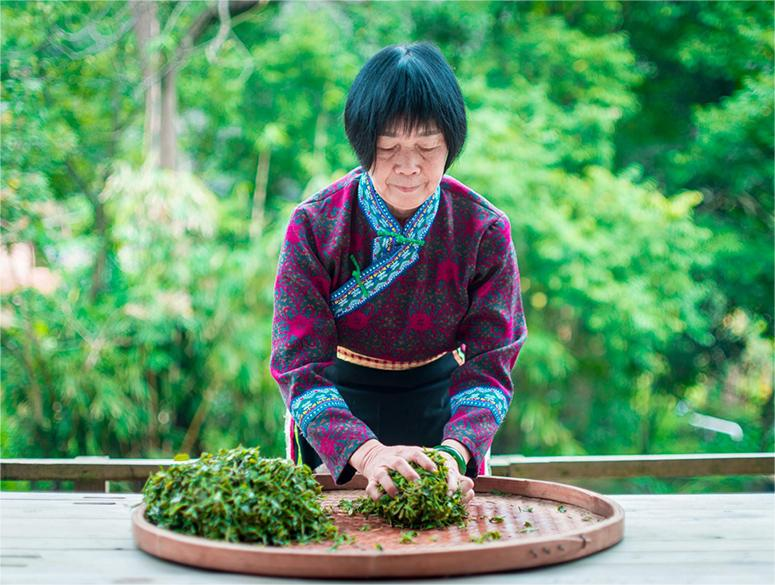
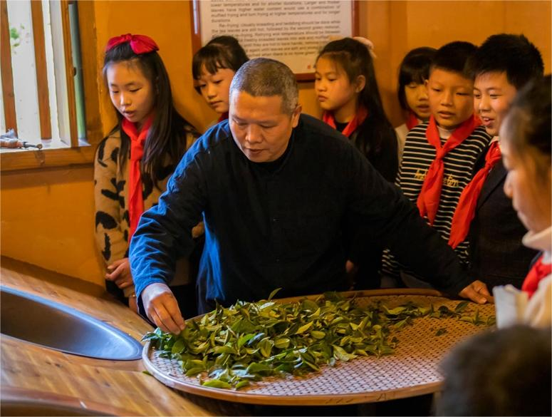

保护与传承
“中国传统制茶技艺及其相关习俗”相关44个项目已先后列入国务院批准公布的国家级非物质文化遗产代表性项目名录。为确保该遗产项目的存续力，增强传承活力，相关社区、群体和个人于2020年12月成立保护工作组，联合制定了《中国传统制茶技艺及其相关习俗五年保护计划(2021—2025)》。
《五年保护计划》将鼓励传承人按照传统方式授徒传艺，依托中职院校和高等院校培养专门人才，巩固代际传承；举办保护传承培训班，加强能力建设；建立研学基地，编写普及读本，开展相关巡展活动，提高青少年的保护意识。同时，通过加强确认和管理、提升建档水平、开展学术研究、完善保护协作机制、维护实践场所、组织多种形式的宣传活动等措施，实施协同保护行动。文化和旅游部和相关地方政府将积极支持相关社区、群体和个人组织实施系列保护措施，做好该遗产项目的传承与实践。

魏月德 代表性传承人
在进行“铁观音”的“做青”

韦洁群 代表性传承人
在进行“六堡茶”的“揉捻”

刘安兴 代表性传承人
正在给小学生示范“武夷岩茶”的制作技艺